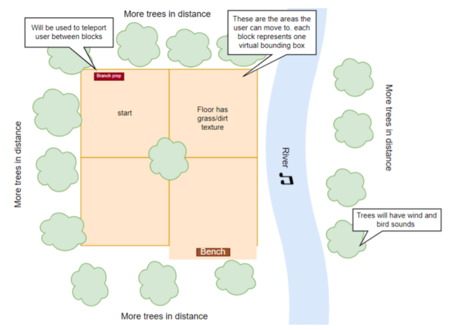
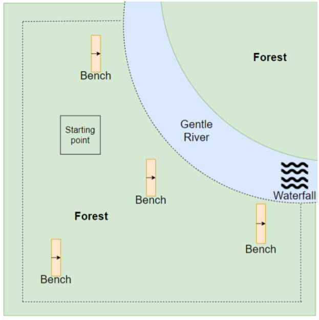

Into the Forest
In every walk with nature, one receives far more than he seeks.
- John Muir -
Nature has numerous health benefits and has been prescribed to relax and reduce stress,
aptly called by some as a “Nature Pill”. Thus, it is important to have access to nature,
but there can be restricting factors such as distance or mobility impairments.
Virtual nature is a substitute that provides these benefits, and we created a
multisensory virtual forest environment that incorporates the best environmental designs to
maximise relaxation.

Goals
Find the best design to incorporate the 4 senses of sight, hearing, smell, and touch (using
physical props)
Create a virtual environment with realistic elements that maximise relaxation
Find the best locomotion technique that maximises immersion and minimizes cyber sickness
Efficiency: have good frame rates and low latency
 To create a realistic environment, we incorporated a waterfall, river, terrain height variations,
trees and plants,
debris, an interactable bench and branch, sky with clouds, sun, natural lighting, fog, and wind.
To create a realistic environment, we incorporated a waterfall, river, terrain height variations,
trees and plants,
debris, an interactable bench and branch, sky with clouds, sun, natural lighting, fog, and wind.
Read More

The first prototype sketch of the environment.
Design iterations started with a low fidelity prototype sketch, upon which feedback was given
before creating an Experience Document, a document detailing the design choices for the
environment. A slide show of our chosen design was then presented to the supervisors, who gave
appropriate feedback, after which changes were made to the Experience Document before
implementation was done. During development, feedback on design was also given and the
environment was adapted accordingly.

A top-down diagram of our environment, with labeled components. The dotted lines represent
player boundaries.
We had three development iterations , the first being a “first playable”, allowing users to move
around but with some placeholder objects still being present. The second iteration refined and
implemented locomotion alternatives and replaced placeholders with their intended objects. The
third and final iteration added final details to the scene and incorporated sound and smell
design.